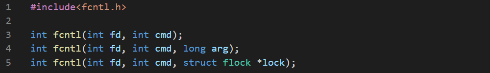

We can control the file descriptor using fcntl(). This is only available in Unix/Linux.
There's 3 vaiant of the function:

The F_DUPFD command is used to make a duplicate file descriptor with the same opened file which allows to operate single file in parallel. There's a function named dup() that acts similarly and available in MS Windows.


The third parameter ensures the lower limit of the newly created file descriptor.
Now we'll write a program to check the file's status flags.


The macro uses the fact than when the binary && is used, the second operand is only evaluated when the first operand is true.
Now we'll write a program to modify the status flags.


Here we first switch on the O_APPEND flag then switch it off then switch it back on.
We can dive much deeper by using the ioctl() function.

But this is totally hardware and OS dependent. We won't go more deeper than here.